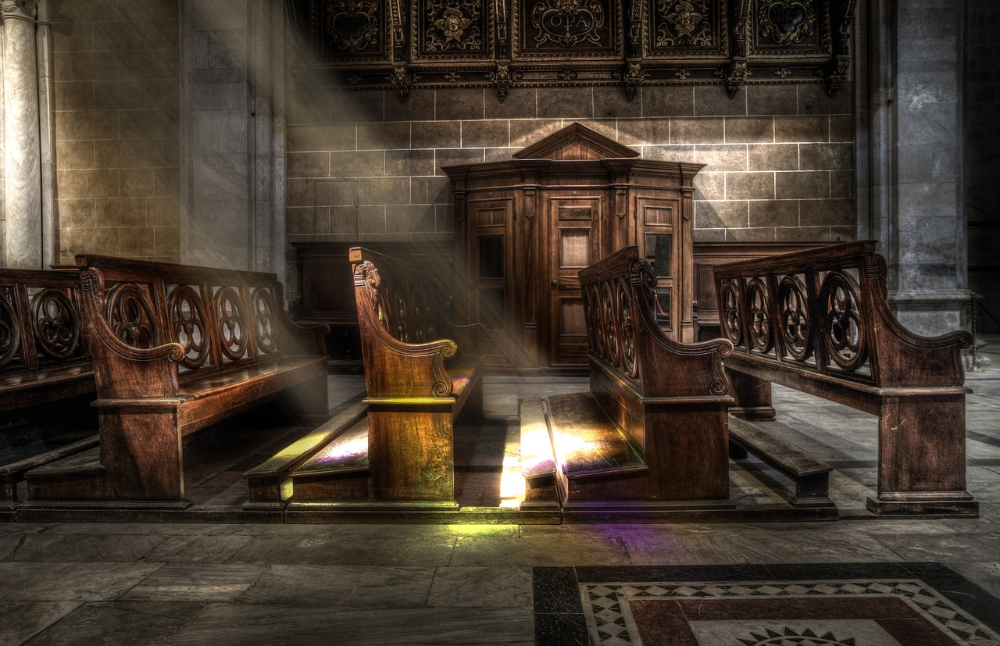
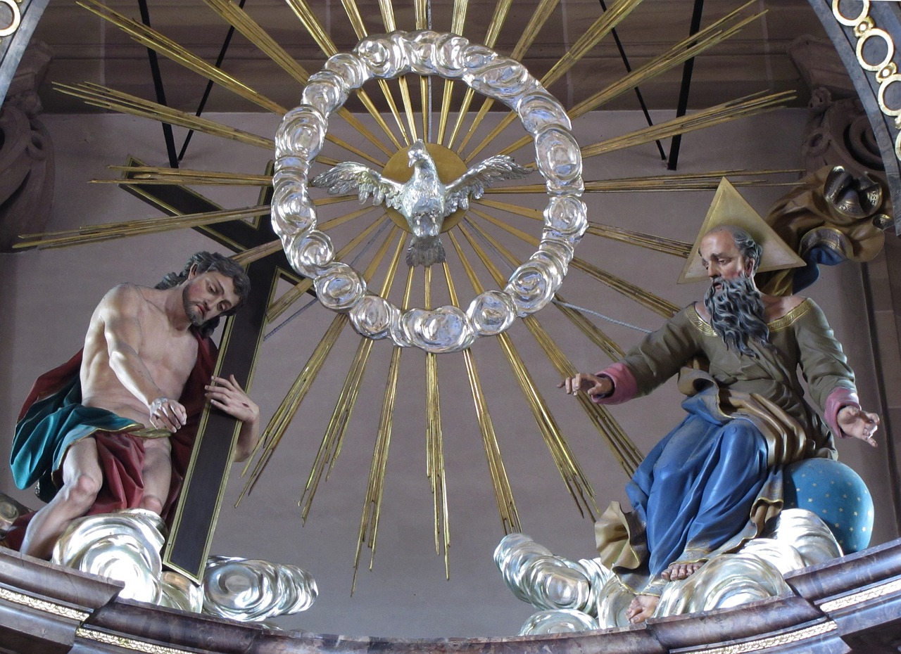

A Cruz de Cristo Responde Tudo
Templos Religiosos
Templos que têm matado a espiritualidade das ovelhas contemporâneas
Doutrina da TRINDADE
Como essa Doutrina Anti-Bíblica tem se espalhado trinfantemente entra a maioria das comunidades pseudo-cristãs.
